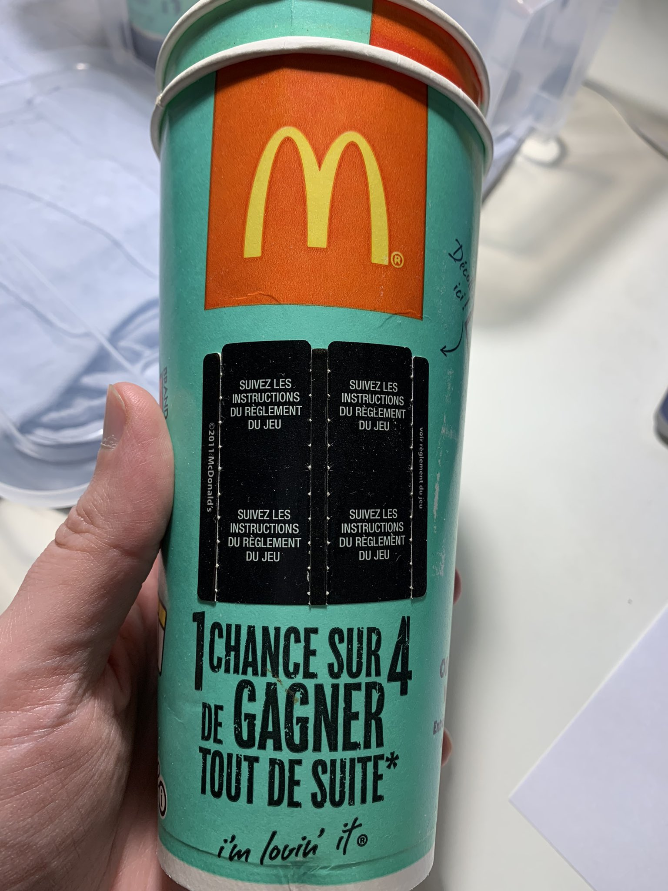
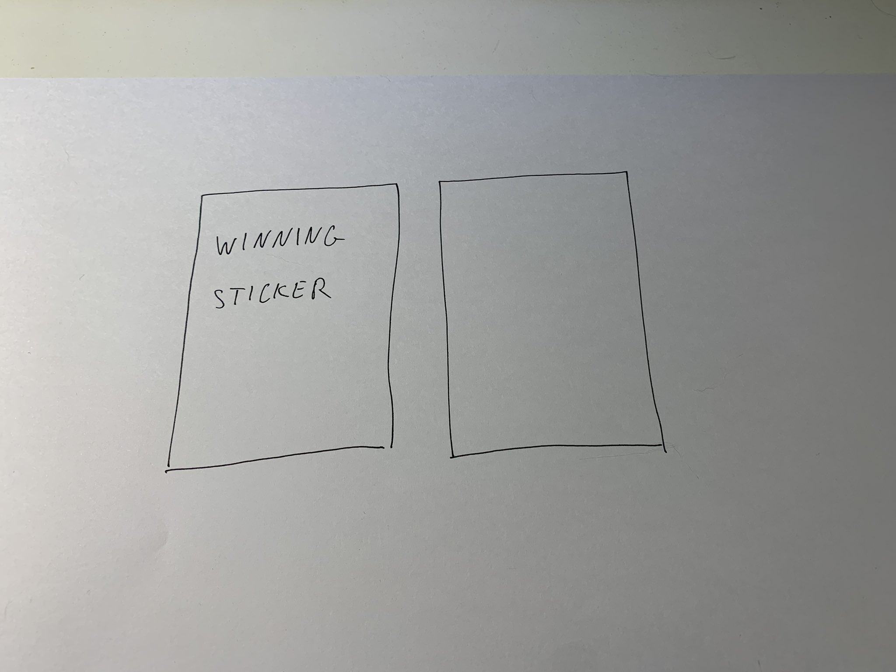
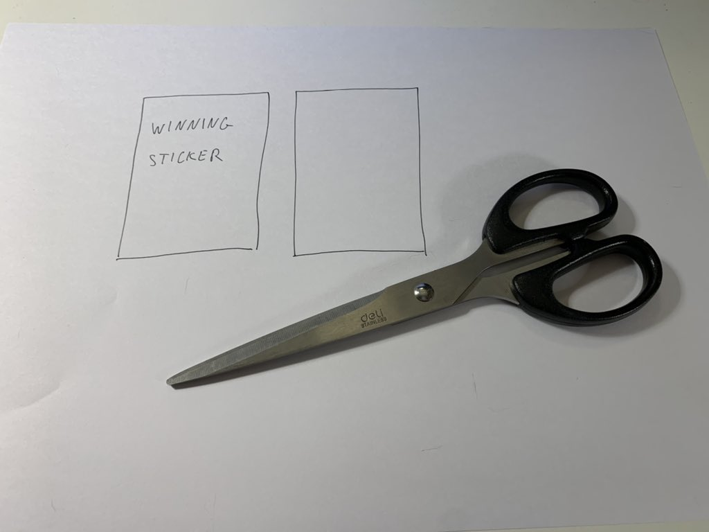
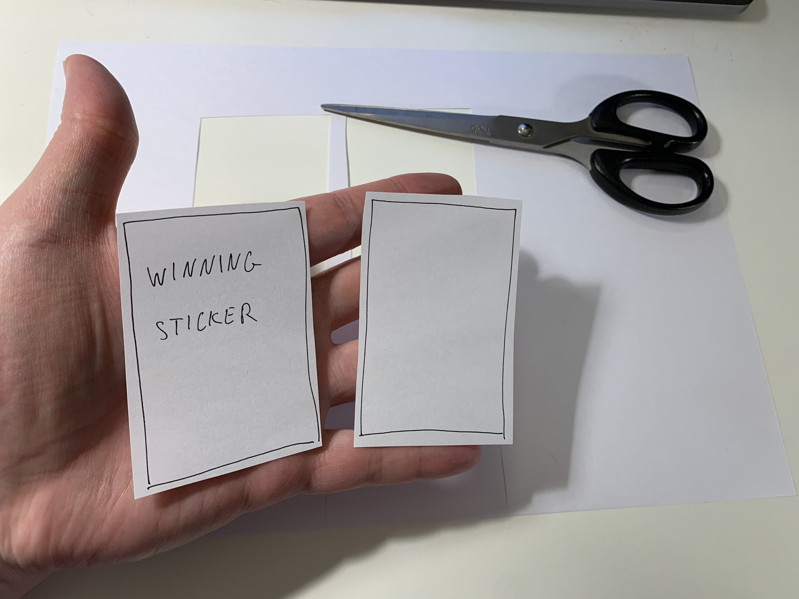

Explanations sent to New York Times journalist Constant Méheut

EXCERPT FROM THE EXPLANATIONS I SENT TO NEW YORK TIMES JOURNALIST CONSTANT MÉHEUT, ON MAY 25 2022 BETWEEN APPROXIMATELY 7:36 PM AND 8:05 PM (BEIJING TIME), BY DIRECT MESSAGING VIA TWITTER. SOME OF THE MESSAGES HAVE BEEN REDACTED FOR READABILITY. PLEASE REFER TO THE FRENCH VERSION IF YOU WANT TO READ THE ORIGINAL VERSION.
[…] (NOTE: I removed, for brevity, some of the initial messages I sent)
There are also other documents that prove that the McDonald’s Monopoly has a huge effect on sales. In such a competitive sector as the fast food industry, if the sweepstake constitutes a fraud (and I am not talking about the fraud mentioned in that previous article ⬆️ but another one), in my opinion, McDonald’s could go bankrupt. Quite simply.
I start with an example of fraud that you should understand relatively easily given your intelligence (NOTE FOR THE READER: intelligence regarding mathematics since Constant Méheut did 2 years of in-depth study of mathematics):

McDonald’s, in France, in 2011, claimed that consumers had “1 chance out of 4 to win instantly” ⬆️

But the fine print on the cups was hard to read: it was written vertically and with a tiny font size. Because the cups are filled with healthy high-sugar sodas like Coca-Cola, you can’t really put your cup horizontally to read what was written vertically. Anyway it says that the basis of the calculation is a “double winning sticker” (“double carte gagnante” in French).
Except that there is a problem: indeed, if the “basis of the calculation” is a “winning” “basis”, then you must have necessarily won since the “basis” is “winning”! It’s 100% sure!
It’s perfectly logical. But to better understand, let’s ignore the initial claim made by McDonald’s that consumers had 1 chance out of 4 to win instantly. Let’s focus on what McDonald’s claimed was the basis of their calculation: “a double winning sticker”.
What exactly is “a double winning sticker”? Let’s find out.
Take a sheet of paper 📄

On this sheet of paper, draw 2 stickers:

Then, on one of the sticker you just drew, write down “winning sticker” in it:

Then, take a pair of scissors ✂️

And you cut out the 2 stickers.
And you put these 2 stickers into your hand:

Imagine that this is your hand ⬆️, ask yourself the following question: what’s the probability to win?
Ignore the initial claim McDonald’s made. Just think about this picture ⬇️

What is the probability to win Mr. Méheut?
CONSTANT MÉHEUT’S RESPONSE RECEIVED ON MAY 27, 2022 at 00:10 (BEIJING TIME) BY DIRECT MESSAGING VIA TWITTER:
Hello Mr. [Name of the victim/key witness/whistleblower]
Please forgive me for my late reply, I’m pretty busy right now. I quickly looked at what you sent me and it is very interesting. Give me some time and I’ll get back to you.
He will answer me soon after by email on May 31, 2022, email in which he claims to have understood the “one chance out of four” fraud:
SPECIAL TEMPORARY NOTE FOR THE READERS: I need to write more explanations. But for now, to fully understand why McDonald’s committed fraud, you need to know that McDonald’s lied about the “1 chance out of 4 to win instantly” claim.
What was the real probability? Was is it what was written in tiny characters? What’s written in tiny characters means that the consumers had 1 chance out of 2.
But McDonald’s also lied about the “1 chance out of 2”, consumers didn’t have “1 chance out of 2”.
It was neither “1 chance out of 4” nor “1 chance out of 2”.
Then, what were the real chance of an instant win? In average, only 1 in 8 stickers was an instant winning sticker. There is therefore a fourfold deviation compared to what McDonald’s initially promised, and that constitutes serious fraud.
I will give more explanations later, but it’s one of the biggest fraud in history!